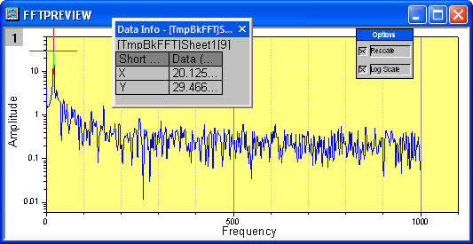

IIR-Filter
IIR-Filter
Zusammenfassung
In OriginPro ist es möglich, digitale IIR-Filter (Infinite Impulse Response) zu entwerfen, zu analysieren und zu implementieren. Der IIR-Filter unterstützt vier Methoden, einschließlich Butterworth, Tschebyscheff Typ I, Tschebyscheff Typ II, und Elliptisch.
Dadurch haben Anwender mehr Auswahl in der Signalverarbeitung.
Origin-Version mind. erforderlich: 9.0 SR0
Was Sie lernen werden
Dieses Tutorial zeigt Ihnen:
- einen IIR-Filter erzeugen und anwenden.
- IIR-Filter und FFT-Filter vergleichen.
Schritte
IIR-Filter erzeugen und anwenden
- Öffnen Sie ein neues Arbeitsblatt und importieren Sie die Datei EMG Recording.dat aus dem Verzeichnis \Samples\Signal Processing\.
- Markieren Sie Spalte B und wählen Sie Analyse: Signalverarbeitung: IIR-Filter im Menü, um das Dialogfeld zu öffnen.
- Ändern Sie den Antworttyp in Hochpass, behalten Sie die Methode Butterworth bei, deaktivieren Sie Minimum für Filterordnung und setzen Sie sie auf 4. Setzen Sie im Zweig Frequenzspezifikation die Grenzfrequenz (Fc) auf 20 und aktivieren Sie dann die Vorwärts-Rückwärts-Filterung. Die Dialogeinstellungen sollten dem folgenden Bild entsprechen. Der IIR-Filter ist entworfen.
- Klicken Sie auf OK, um dem erstellten IIR-Filter auf den Eingabedatensatz anzuwenden.
- Es wird eine neue Spalte für die gefilterten Daten zu den ursprünglichen Daten hinzugefügt sowies ein neues SOS-Matrixblatt.
Ergebnisse mit FFT-Filter vergleichen
- Markieren Sie Spalte B im ursprünglichen Arbeitsblatt und führen Sie den FFT-Filter über Analyse: Signalverarbeitung: FFT-Filter aus.
- Wählen Sie in dem geöffneten Dialogfeld Hochpass für Filtertyp und setzen Sie 20 als Grenzfrequenz.
- Klicken Sie auf OK. Spalte C im Arbeitsblatt EMGRecording enthält das gefilterte Ergebnis des zuvor entworfenen IIR-Filters. Markieren Sie Spalte B und Spalte C, um ein Liniendiagramm mit der Schaltfläche
 zu erzeugen (Graph 1).
zu erzeugen (Graph 1).
- Verwenden Sie die Skalierung mit Hilfe der Schaltfläche
 , um den Bereich zwischen 12,5 s und 13,3 s zu vergrößern.
, um den Bereich zwischen 12,5 s und 13,3 s zu vergrößern.
- Spalte E im Arbeitsblatt EMGRecording enthält das gefilterte Ergebnis des IIR-Filters. Markieren Sie Spalte B und Spalte E, um ein Liniendiagramm mit der Schaltfläche zu erzeugen (Graph 2).
- Verwenden Sie auch die Skalierung mit Hilfe der Schaltfläche , um den Bereich zwischen 12,5 s und 13,3 s zu vergrößern. Die zwei Diagramme könnten für einen visuellen Vergleich verwendet werden.
- Beachten Sie, dass es viele Restwelligkeiten (Rippel) im Ergebnis des FFT-Filters gibt, aber fast keine im Ergebnis des IIR-Filters.
Restwelligkeit (Rippel) im FFT-Filter
- Markieren Sie die Spalte E und klicken Sie auf die Schaltfläche , um ein Liniendiagramm (Graph 3) zu erstellen.
- Aktivieren Sie Graph 3, wählen Sie Minitools: FFT und setzen Sie die X-Skalierung auf Von 12,664 Bis 13,052.
- Klicken Sie auf OK, um das Vorschaufenster aufzurufen, in dem die Rippel fast reine 20,125 Hz Sine betragen.
- 
- Jetzt versuchen wir, diese Restwelligkeit bei 20,125 Hz durch Anwenden eines anderen Hochpassfilters bei 25 Hz zu entfernen. Dabei bleibt Spalte E markiert. Wählen Sie Analyse: Signalverarbeitung: FFT-Filter.
- Wählen Sie Hochpass für Filtertyp und setzen Sie die Grenzfrequenz auf 25.
- Das Ergebnis wird in Spalte G aufgeführt. Markieren Sie Spalte G und klicken Sie auf die Schaltfläche , um ein Liniendiagramm (Graph 4) zu erstellen.
- Aktivieren Sie Graph 4, wählen Sie Minitools: FFT und setzen Sie die X-Skalierung auf Von 12,664 Bis 13,052. Im Vorschaufenster sind noch immer Rippel zu sehen. Sie sind nun versetzt von 20,125 Hz auf 25,157 Hz.
- Beachten Sie, dass die Rippel (Restwelligkeit) durch den FFT-Filter bei diesem Datensatz nicht entfernt werden konnten.